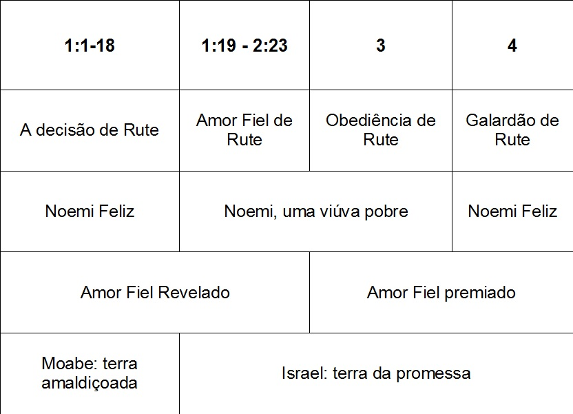
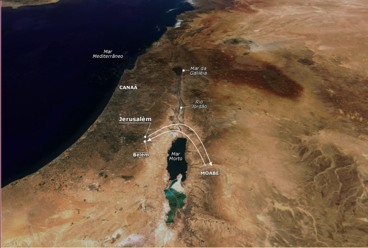

Panorama
do Antigo
Testamento
Adaptado de Edgar José Dallegrave
Livros
Históricos
Rute
Livro de Rute

Título:
- Rute = a principal personagem
- Hebraico = Reut (amizade, companheirismo)
Autor:
- Desconhecido
- Samuel? Davi? (4:17,22)
Data:
- 960 - 950 a. C.
Contexto:
- Moabe/Belém
- Rute = a principal personagem
- Hebraico = Reut (amizade, companheirismo)
Autor:
- Desconhecido
- Samuel? Davi? (4:17,22)
Data:
- 960 - 950 a. C.
Contexto:
- Moabe/Belém
Versículo Chave:
- 1:6; 4:14; 4:17
Frase Chave:
- Redenção (Parente o remidor), Amor Fiel
Tema/Mensagem:
- A graça e o amor fiel do Senhor estendendo-se
a todos
Propósito:
- Escrito para demonstrar a maravilhosa graça
de Deus em preservar um remanescente fiel
em uma época escura, culminando com o
nascimento do Rei Davi
- 1:6; 4:14; 4:17
Frase Chave:
- Redenção (Parente o remidor), Amor Fiel
Tema/Mensagem:
- A graça e o amor fiel do Senhor estendendo-se
a todos
Propósito:
- Escrito para demonstrar a maravilhosa graça
de Deus em preservar um remanescente fiel
em uma época escura, culminando com o
nascimento do Rei Davi
Contribuição ao Cânon:
- Demonstra o amor fiel (graça) de Deus para com
o mundo (gentios)
- Demonstra a constante presença de um
remanescente (culminando com Davi)
- Providencia pessoas como remidores, um papel
que no futuro será de Cristo
- Revela a importância da Terra Prometida para
Israel
- Demonstra a fidelidade de Deus à Aliança
Abraâmica
- Demonstra o amor fiel (graça) de Deus para com
o mundo (gentios)
- Demonstra a constante presença de um
remanescente (culminando com Davi)
- Providencia pessoas como remidores, um papel
que no futuro será de Cristo
- Revela a importância da Terra Prometida para
Israel
- Demonstra a fidelidade de Deus à Aliança
Abraâmica
Fatos Interessantes:
- Rute é uma das quatro mulheres destacadas na
genealogia de Jesus (Mt 1)
- Câmos era o deus de Moabe, a quem sacrificavam
crianças
- Boaz era filho de Raabe, a prostituta de Jericó (Mt 1:5).
Desta forma, Davi, o bisneto de uma moabita, é trineto
de uma cananita. Isso mostra que Deus é um Deus
gracioso
- Um dos dois livros que trazem o nome de uma mulher
- Rute é uma das quatro mulheres destacadas na
genealogia de Jesus (Mt 1)
- Câmos era o deus de Moabe, a quem sacrificavam
crianças
- Boaz era filho de Raabe, a prostituta de Jericó (Mt 1:5).
Desta forma, Davi, o bisneto de uma moabita, é trineto
de uma cananita. Isso mostra que Deus é um Deus
gracioso
- Um dos dois livros que trazem o nome de uma mulher
Pontos Notáveis:
- Dt 23:3 proibia a entrada de qualquer moabita na
congregação de Israel até a décima geração (isto incluía
Davi)
- A lei levita do remidor exigia que o parente tomasse a
viúva como esposa e desse filhos ao seu falecido
(Dt 25:5-10; Lv 25:25-31, 47-55; Jó 19:25)
- Um entendimento entre Juízes e Rute é absolutamente
indispensável para compreender a mensagem do livro.
Rute é como um apêndice do Livro de Juízes (Jz 17 – 21),
mas trazendo uma mensagem de graça e amor, não de
descendência e infidelidade.
- A genealogia de Davi no fim do livro é indispensável para
a compreensão da mensagem do mesmo: a moabita fiel se
tornou bisavó do rei, e também parente do Messias
através da graça de Deus
- Dt 23:3 proibia a entrada de qualquer moabita na
congregação de Israel até a décima geração (isto incluía
Davi)
- A lei levita do remidor exigia que o parente tomasse a
viúva como esposa e desse filhos ao seu falecido
(Dt 25:5-10; Lv 25:25-31, 47-55; Jó 19:25)
- Um entendimento entre Juízes e Rute é absolutamente
indispensável para compreender a mensagem do livro.
Rute é como um apêndice do Livro de Juízes (Jz 17 – 21),
mas trazendo uma mensagem de graça e amor, não de
descendência e infidelidade.
- A genealogia de Davi no fim do livro é indispensável para
a compreensão da mensagem do mesmo: a moabita fiel se
tornou bisavó do rei, e também parente do Messias
através da graça de Deus
Aplicações:
- A graça do Senhor abrange todo o mundo -
qualquer pessoa que confiar nEle!
- Deus sempre preserva um remanescente
fiel do Seu povo para glorificar o Seu nome e
manifestar o amor de Deus
- Deus sempre coordena, mesmo as menores
e mais insignificantes do mundo, para cumprir
e demonstrar Sua Graça
- A graça do Senhor abrange todo o mundo -
qualquer pessoa que confiar nEle!
- Deus sempre preserva um remanescente
fiel do Seu povo para glorificar o Seu nome e
manifestar o amor de Deus
- Deus sempre coordena, mesmo as menores
e mais insignificantes do mundo, para cumprir
e demonstrar Sua Graça
